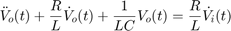
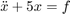
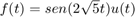
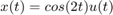

PRÁCTICA 07. RESPUESTA EN FRECUENCIA, SIMULACIÓN EN MATLAB.
Contents
Integrantes
- Cuevas Morales Saúl Asís
- Gonzalez Zúñiga Alexis Bryan
- Méndez Pallares Josué
- Vallejo Camarillo Moisés Eduardo
Objetivos
- Conocer los conceptos de respuesta en frecuencia.
- Conocer los conceptos de filtros.
- Realizar graficas de Bode (manual y con MATLAB).
- Realizar simulaciones numéricas de sistemas con MATLAB.
Introducción
Diseño de filtros por colocación de polos y ceros de H(s).
Un sistema de transferencia puede ser expresado en su forma polar de la siguiente manera:
La magnitud es igual a b0*producto de las distancias de ceros a p/producto de las distancias de los polos a p.
Y el ángulo es definido por la suma de los ángulos cero – la suma de los ángulos de los polos a p.
Ganancia adquirida por un polo
Si se quiere comprender el efecto de los polos y los ceros en la respuesta de la frecuencia, se debe considerar un caso hipotetico de un simple polo -a+jw0. Para encontrar la respuesta a la amplitud para determinado w, debemos conectar el polo al punto jw. Si la distancia de la línea es d en tonces la magnitud es K/d
Donde el valor exacto de la constante k no es importante en este punto. Como w incrementa de cero, d disminuye progresivamente hasta que w alcance el valor w0. En extremo caso cuando a=0, la ganancia en a0 tiende al infinito. La repetición de polos aumenta el efecto de frecuencia selectiva.
Supresión de ganancia por un cero
Usando el mismo argumento observamos que los ceros en -a±jw0 tienen exactamente el efecto opuesto de la supresión de la ganancia en w0. Un cero en el eje imaginario en jw0 suprimira la ganancia en la frecuencia w0. También unos pares de polo y uncero colocados cerca (dipolo) tienden a cancelarse mutuamente la influencia del otro en la frecuencia.
Desarrollo
- Problema 1. El siguiente sistema es un ciruito electrico RLC en serie, donde la estrada es el voltaje suministrado al circuito y la salida es el voltaje en la resistencia,

realiza lo siguiente
1a. Demuestra que la ecuación que modela el sistema es

Ayuda: Voltaje suministrado es igual a voltaje consumido, escribir las variables en terminos de la salida mediante las relaciones de voltaje corriente en cada elemento y utilizar el hecho de que es un circuito en serie
1b. Encuentre la función de transferencia.
En adelante suponga que , y
1c. Reporta el código y la gráfica de la respuesta al impulso, para diferentes tiempos de simulación de tal manera que se muestre el comportamiento del sistema
1d. Reporta el codigo y la gráfica de la respuesta al escalón, para diferentes tiempos de simulación de tal manera que se muestre el comportamiento del sistema
Define
1e. Presenta las simulaciones con una entrada seno de de amplitud 1 con frecuencias, , , y , para diferentes tiempos de simulación de tal manera que se muestre el comportamiento del sistema
1f. Reporta las gráficas de Bode para los valores de y propuestos y varia de 1 a 1e-6 (en potencias de 10), ¿Qué sucede con la respuesta en frecuencia?
1g. Reporta las gráficas de Bode para los valores de y propuestos y varia para  , ¿Qué sucede con la respuesta en frecuencia?
, ¿Qué sucede con la respuesta en frecuencia?
- Problema 2. Consideremos el siguiente sistema
2a. Muestra que
2b. Muestra que cuando que la magnitud de la respuesta en frecuencia es cuando
2c. Para modificar el comportamiento del sistema, se realiza una retroalimentación negativa con . ¿Para qué valor de  se tiene una ganancia de ?, ¿Qué concluye?
se tiene una ganancia de ?, ¿Qué concluye?
2d. Para modificar el comportamiento del sistema, se realiza una retroalimentación negativa con . ¿Para qué valor de se tiene una ganancia de ?, ¿Qué concluye?
2e. Reporte las graficas de bode (código) de los tres sistemas anteriores.

- Problema 3 Para el siguiente sistema
3a. Bosqueja las gráficas de Bode a mano paso a paso, puedes revisar el ejemplo 4.25 y 4.26 de Lathi
3b. Utiliza la instrucción bode para realizar las gráficas de bode
- Problema 4 Para el sistema
Simule la respuesta al escalón (CI=0), para diferentes tiempos de simulación de tal manera que se muestre el comportamiento del sistema y comparela con la solución analítica
- Problema 5 Se tiene el siguiente sistema

5a. ¿El sistema es BIBO estable?
5b. Encuentre la respuesta (analítica) para condiciones iniciales cero del sistema si , recuerde aplicar el resultado de convolución si es necesario.
5c. De acuerdo a 5a, ¿tiene sentido hablar de la respuesta en estado estacionario?
5d. Presente las graficas de Bode del sistema utilizando la instrucción bode
5e. ¿Cuáles son sus concluisiones al respecto?
5f. Encuentre la respuesta (analítica) para condiciones iniciales cero del sistema si , compare con la simulación en MATLAB
5g. Encuentre la respuesta (analítica) para condiciones iniciales cero del sistema si , compare con la simulación en MATLAB
- Problema 6 Investigue la instrucción linearSystemAnalyzer (disposible a partir de 2015a) y con ayuda de esta, reporte las gráficas de
6a. Respuesta al Impulso
6b. Respuesta al escalón
6c. Respuesta a 
6d. Graficas de Bode
Para condiciones iniciales cero y 10 segundos de simulación, para el sistema.
Apéndices
Referencias
- B. P. Lathi. (2005). Linear Systems and Signals. 198 Madison Avenue, New York, New York 10016: Oxford University Press.